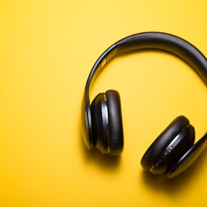
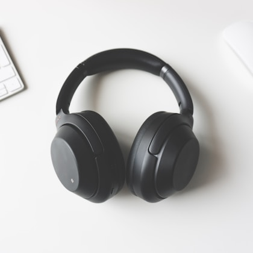
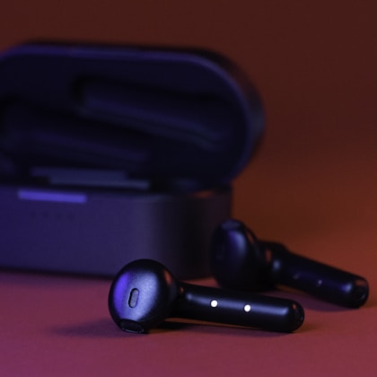
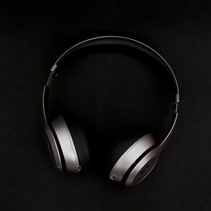
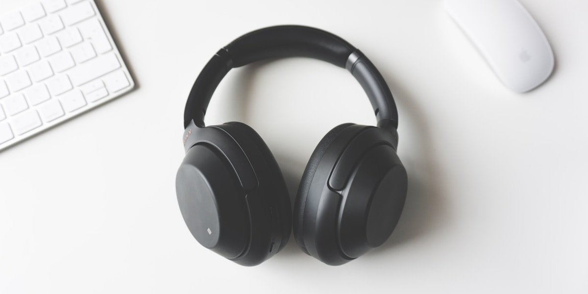

Noise-cancelling headphones are easy to overbuy. The priciest model is not always the best one for your ears, your commute, or your call-heavy workday. The right pair should reduce low engine rumble, stay comfortable for hours, sound natural enough that you enjoy music, and avoid turning every voice on a call into a thin, processed mess.
Our top recommendation for most people is the Sony WH-1000XM5. It has excellent noise cancellation, strong battery life, a lighter feel than many premium rivals, and app controls that are deep without being impossible to understand. The Bose QuietComfort Ultra Headphones are the better choice if you want the most relaxed fit and the strongest travel comfort. Apple AirPods Max still make sense for Apple-heavy users who value transparency mode and build quality, though the weight and price are hard to ignore. For value buyers, the Anker Soundcore Space Q45 gives you credible ANC and long battery life for far less money.
The best choice depends on where the noise comes from. Plane engines and train rumble are different from office voices, barking dogs, keyboard clatter, or coffee-shop music. ANC is strongest against steady low-frequency sound. It can reduce voices, but it rarely makes them vanish. If you want silence for conversation-heavy rooms, fit and passive isolation matter almost as much as the ANC processor.

Sony WH-1000XM5
The best balance of ANC, comfort, app controls, microphone handling, and battery life for most commuters and frequent travelers.
Typical street price: $300 to $400

Bose QuietComfort Ultra Headphones
The pair we would choose for long flights if comfort is the priority. The fit is relaxed, the ANC is excellent, and the controls are easy to learn.
Typical street price: $329 to $429

Apple AirPods Max
Still the smoothest option for Apple users who want excellent transparency mode, premium build, and easy device switching.
Typical street price: $450 to $550

Anker Soundcore Space Q45
A budget-friendly pair with long battery life and solid noise reduction. It is not as refined as Sony or Bose, but the value is hard to beat.
Typical street price: $100 to $150
Real product parameters
| Model | Battery life | Weight | Bluetooth | Charging | Key features |
|---|---|---|---|---|---|
| Sony WH-1000XM5 | Up to 30 hours with ANC | About 250 g | Bluetooth 5.2, multipoint | USB-C, quick charge | Adaptive ANC, LDAC, app EQ, speak-to-chat |
| Bose QuietComfort Ultra Headphones | Up to 24 hours | About 250 g | Bluetooth 5.3, multipoint | USB-C | Immersive Audio, adjustable ANC, excellent comfort |
| Apple AirPods Max | Up to 20 hours | About 384 g | Bluetooth 5.0 | Lightning on current widely sold model | Spatial audio, transparency mode, H1 chips, aluminum build |
| Anker Soundcore Space Q45 | Up to 50 hours with ANC, up to 65 without | About 295 g | Bluetooth 5.3, multipoint | USB-C | Adaptive ANC, LDAC, app EQ, strong value |
The parameter table shows why price alone is a weak shortcut. The AirPods Max cost far more than the Soundcore Space Q45 and have shorter battery life, but the Apple pair offers better build, a richer transparency mode, and tighter Apple-device integration. The Sony and Bose models sit in the middle because they combine high-end ANC with lower weight and friendlier travel use.
What matters in ANC
Great noise cancellation is not just about making a room feel quiet for five seconds in a store. Low-frequency reduction, wind handling, pressure feeling, microphone quality, and comfort over a long session all matter. Battery life is less exciting, but it decides whether the headphones are useful on travel days.
Some headphones create a pressure sensation that bothers certain listeners. That does not mean the ANC is unsafe, but it can make a technically excellent pair unpleasant. If you are sensitive to pressure, Bose is often a safer first try because the comfort tuning is relaxed. Sony gives you more software control, but the fit and ear-cup shape may not suit everyone.
| Pick | Strength | Tradeoff |
|---|---|---|
| Sony WH-1000XM5 | Balanced ANC, app features, and battery | Does not fold as compactly as older Sony models |
| Bose QuietComfort Ultra | Best long-flight comfort | Battery life trails Sony and Anker |
| AirPods Max | Apple ecosystem and transparency mode | Heavy and expensive |
| Soundcore Space Q45 | Strong battery value | Less refined microphone and tuning |
Call quality and microphones
Call quality is where many headphone reviews become too generous. A pair can sound great to you and still make your voice thin or choppy to everyone else. For remote work, we prefer models that handle keyboard noise, street noise, and room echo without making speech sound over-processed. Sony and Bose are the safer choices for regular calls. The AirPods Max can be excellent inside the Apple ecosystem, especially when paired with a Mac or iPhone. Budget models can work, but they usually struggle more when background noise changes quickly.
If calls are your main use, do not buy based on ANC alone. Look for sidetone, microphone noise reduction, multipoint support, and easy mute controls. Multipoint is useful if you move between a laptop and phone during the day. Without it, you may spend more time repairing Bluetooth than actually listening.
Comfort is the hidden feature
Noise cancellation gets the headline, but comfort decides whether a pair becomes part of your routine. Clamp force, pad shape, heat buildup, and headband pressure are hard to judge from a spec sheet. If you wear glasses, large pads and softer foam often matter more than a small difference in ANC strength. Heavy headphones can feel luxurious for ten minutes and tiring by hour three.
The AirPods Max are the clearest example. They feel premium, the controls are excellent, and transparency mode is outstanding, but the weight is real. Some people tolerate it well because the headband distributes pressure nicely. Others feel the weight quickly. If you fly often or wear headphones all workday, try to buy from a retailer with a good return policy.

Sound quality and app EQ
ANC headphones rarely sound as open as good wired audiophile headphones, but they do not need to. They need to make music, podcasts, and calls pleasant in noisy places. Sony gives you useful app EQ and codec support. Bose tends to sound clean and easy to enjoy without much adjustment. Apple鈥檚 tuning is polished, especially with spatial audio content, though the lack of a standard wired lossless path limits some niche use. Soundcore gives you more EQ flexibility than most budget buyers expect, but the tuning can take more work.
Battery and app notes
Most good ANC headphones now last long enough for a transatlantic flight, but charging behavior still matters. Quick-charge features are useful if you forget to plug in before leaving. We also prefer apps that make EQ, transparency mode, firmware updates, and ANC level easy without requiring constant notifications or account prompts.
Battery claims are usually measured under ideal conditions. Higher volume, LDAC, immersive audio, cold weather, and frequent calls can reduce runtime. If you fly often, 30 hours is a comfortable target. If you mostly commute, 20 to 24 hours can be fine as long as charging is fast and predictable.
Who should skip ANC headphones
If you mostly listen at home in a quiet room, open-back or standard wireless headphones may sound better for the money. Buy ANC for noise, travel, and focus, not because the spec sheet looks impressive. If you hate over-ear heat, consider noise-cancelling earbuds instead. If you need studio monitoring, skip consumer ANC entirely and buy something built for accuracy.
Also skip paying flagship prices if you only need occasional quiet. The Soundcore Space Q45, older Bose models, or discounted previous-generation Sony headphones can be smarter buys. Flagships are best for people who use them constantly enough that small comfort and ANC improvements matter every week.
Travel and everyday use notes
For travel, the case and folding design matter more than they seem. The Sony WH-1000XM5 case is slim but the headphones do not fold inward like some older models. Bose headphones are easier to pack for many travelers because the design feels built around flight use. AirPods Max have the weakest case design here, which makes them less convenient in a crowded backpack. Soundcore鈥檚 case is not luxurious, but it protects the headphones well enough for the price.
Controls are another daily-use detail. Touch controls can feel modern, but they can misread taps in cold weather or when you adjust the ear cup. Physical buttons are less flashy and often easier on flights. If you wear gloves, travel in winter, or adjust volume often, try the controls before committing. A headphone you cannot control easily becomes annoying no matter how good the ANC is.
Codecs, latency, and device matching
Bluetooth codec support sounds technical, but the practical advice is simple. iPhone users should not buy a headphone only because it supports LDAC, because iPhones do not use it. Android users with LDAC support may benefit from Sony or Soundcore if they listen to high-quality files, though noisy environments reduce the advantage. For movies and games, latency can matter more than codec quality. Most premium headphones handle video well enough, but competitive gaming still favors wired or low-latency gaming headsets.
Device matching also affects convenience. AirPods Max are easiest inside Apple鈥檚 world. Sony and Bose are better if you jump between Windows, Android, iOS, and work laptops. Multipoint Bluetooth sounds like a small feature until you take calls on a laptop and then need to answer your phone. If you work across two devices every day, make multipoint a required feature rather than a bonus.